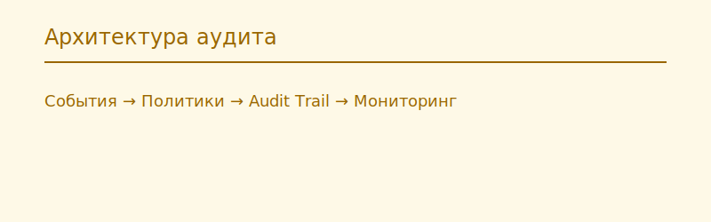

Архитектура системы аудита Oracle
Главная
Unified Auditing
FGA
Традиционный аудит
Управление
Архитектура
Безопасность
Инструменты
Компоненты архитектуры
События базы данных (DML, DDL, сессии)
Audit Trail (UNIFIED_AUDIT_TRAIL / DBA_AUDIT_TRAIL)
Политики аудита
FGA — детальный аудит
Управление и архивирование
Схема архитектуры
